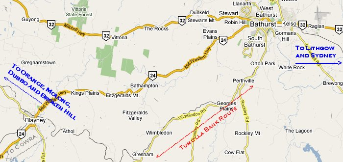

New South Wales - Tumulla Bank Route (version 1.6)
Route design by Chris Nelson and Brian Bere-Streeter (v1.6 scenery upgrade)
Overview
This exquisite little route portrays the climb from Perthville to Gresham on the Main West line. Tumulla Bank is located between the main towns of Bathurst and Blayney and in MSTS terms is between the western end of "Blue Mountains line v4" and the eastern end of "Central West v1.6".
Whilst only a short route, it demonstrates that an MSTS route doesn't have to be hundreds of kilometers long to capture and hold your interest.
This route was originally released with the team-ALCO NSWGR 36 Class Loco Pack in order to showcase these fine locomotives in a challenging environment. It was always intended that this route would be distributed as freeware and when Brian Bere-Streeter offered to perform his upgrade magic on the route, Chris readily agreed.
Total mainline trackage: ~22km.

Prototype Operator: New South Wales Government Railways and its successors.